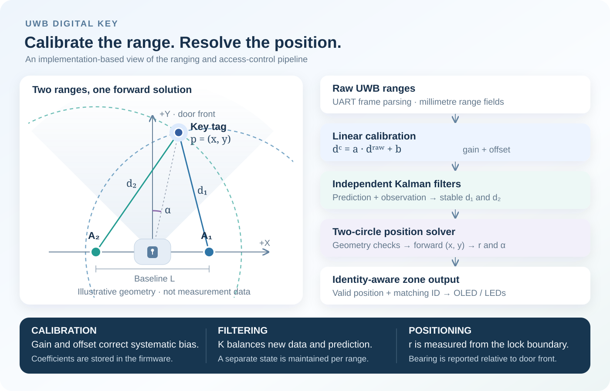

ENGINEERING PROJECT
UWB Digital Key Experiment
School of Transportation and Electrical Engineering
Dalian University of Science and Technology
Firmware & positioning prototype

Project overview
This project links UWB ranging, estimation and geometric localization to a small embedded access-control experiment. Its central technical problem is to turn two noisy distance streams into a stable position relative to a lock, then make the position useful for zone decisions.
The STM32 firmware separates serial measurement parsing, linear calibration, per-anchor filtering, circle-intersection geometry and local state output. A Windows diagnostic application supports development by displaying distances, anchor settings and localization results.
The digital-key task
Problem C of the 2026 TI Cup Liaoning contest asks for a wireless key and lock experiment. A four-bit DIP switch sets the accepted identity, LEDs represent lock/unlock states, and the display reports identity, radial distance, bearing and the current decision.
The official operating sector is ±45° in front of the lock, with communication over at least 3 m: unlock within 1 m, welcome at 1–2 m and sensing beyond 2 m. The specified error targets are 0.3 m for radial distance, 10° for bearing and 0.2 m for zone boundaries. These are the contest targets used to define the engineering problem.
Linear calibration: correcting the range scale
The measurement path is raw UWB range → affine calibration → scalar Kalman filtering → two-circle positioning. The serial parser reads hexadecimal range fields in millimetres, then applies a gain-and-offset correction independently to the incoming ranges.
For the affine correction below, a is the scale factor and b the offset. Reference-distance pairs can be used to estimate them by offline least squares.
The supplied source contains an affine map with a ≈ 0.994344 and b ≈ −520.441 mm. The original reference-distance pairs and fitting record are not included, so these coefficients are presented as an implementation setting rather than a validated calibration result. Linear calibration addresses systematic range bias; temporal filtering addresses sample-to-sample variation.
Kalman filtering: stabilizing each range stream
Each anchor has a separate one-dimensional filter state and uncertainty. A constant-distance prediction carries the previous estimate forward; process noise Q allows it to change. The calibrated observation z then corrects that prediction according to its measurement uncertainty R.
K balances the new observation against the predicted distance. Increasing Q relative to R makes the filter respond more readily to motion; reducing that ratio gives stronger smoothing with more lag. Filtering the two range channels before geometry prevents their uncorrelated fluctuations from directly driving every position update. The firmware then passes the first two filtered ranges to the position solver.
Two-anchor geometry: from two ranges to a position
Let the anchors be A₁ and A₂, separated by baseline L, with filtered ranges d₁ and d₂. Subtracting the two circle equations gives the intersection chord's position along the baseline:
Here e is the unit baseline vector and n its perpendicular. The two signs give mirrored candidate locations; the implementation selects the forward solution.
The lock centre is the origin; +Y points out through the door and +X points right. The default source places the anchors at x = ±260 mm. It rejects nonpositive/nonfinite ranges, an inadequate baseline, nonintersecting circles and a point too close to the baseline. Bearing is α = atan2(x, y). The competition measures radial distance from the boundary of its 600 mm-diameter lock enclosure, so the code uses r = max(√(x² + y²) − 300 mm, 0).
The decision stage checks positioning status and the four-bit identity comparison, then selects unlock for r < 1 m, welcome for 1–2 m, or the outer state. OLED values, LEDs and a buzzer expose the result. The ±45° sector is part of the official task; the inspected firmware computes and displays bearing, while its current zone decision uses distance and identity.
My contribution
I developed and integrated the embedded hardware and software, debugged the ranging and zone-control logic, and used AI assistance to build a Windows diagnostic application.
The desktop tool supports serial communication and inspection of raw and filtered distances, anchor coordinates and localization results. It serves as a development and tuning interface.
Implementation status and next steps
The supplied firmware snapshot establishes the calibration → filtering → geometry pipeline and local zone-output logic. Calibration records and repeated moving-tag measurements are the next evidence needed to quantify radial and angular errors, including multipath and obstructed conditions.
Further integration covers the full wireless key-ID receive path and an explicit forward-sector gate. In the inspected snapshot, a configured example key ID is compared with the DIP-switch value and bearing is displayed; the distance-based state decision is kept separate from those remaining integration steps.